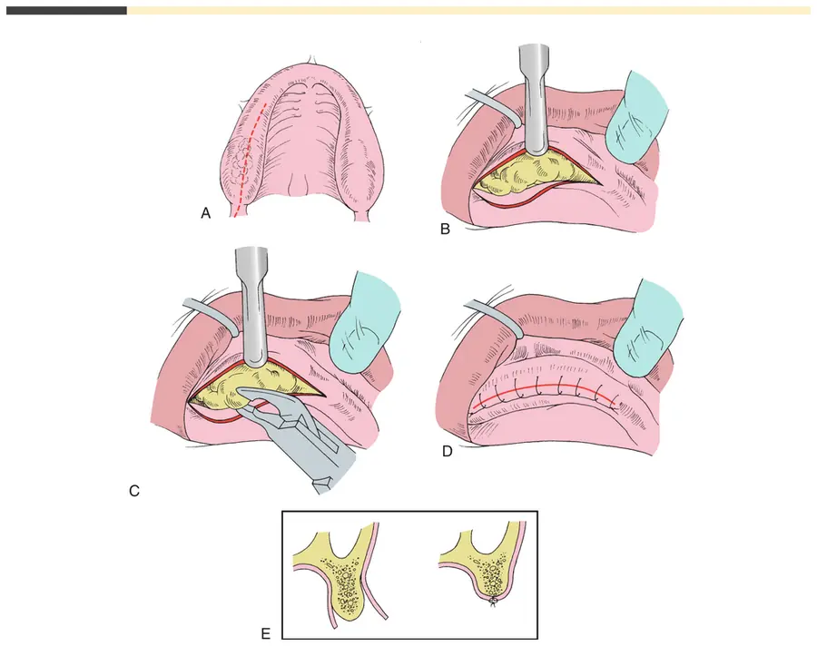

نسخه استخراجشده؛ ترجمه یا تأیید علمی انجام نشده است. وضعیت: captured
شکستن بخش بزرگی از استخوان در ناحیهی توبروزیتهی ماگزیلا وضعیت نگرانکنندهی ویژهای است.

چرا؟ توبروزیتهی ماگزیلا برای ساخت یک دنچر ماگزیلای پایدار و گیردار اهمیت دارد. اگر بخش بزرگی از این توبروزیته همراه دندان ماگزیلا برداشته شود، پایداری دنچر احتمالاً به خطر میافتد. و یک دهانه به داخل سینوس ماگزیلا هم ممکن است ایجاد شود.
و دو موقعیتی که بیش از همه به آن میانجامند: شکستگی توبروزیتهی ماگزیلا بیش از همه از کشیدن یک مولر سوم رویشیافتهی ماگزیلا، یا از کشیدن مولر دوم اگر آخرین دندان قوس باشد، نتیجه میشود.
درمان در حالت مطلوب: اگر شکستگی توبروزیته حین کشیدن رخ دهد، درمان شبیه همان چیزی است که برای سایر شکستگیهای استخوان گفته شد: جراح — با استفاده از حمایت انگشتی زائدهی آلوئولار حین شکستگی، و اگر استخوان به پریوست چسبیده باقی مانده باشد — باید تدابیری برای تضمین بقای استخوان شکسته به کار بندد.
ولی اگر توبروزیته بیش از حد متحرک باشد و نتوان آن را از دندان دیسکت کرد، جراح چند راه دارد:
و یک قید مهم بر هر دو راه: اگر دندان مولر ماگزیلا پیش از جراحی عفونی بوده باشد، این دو تکنیک باید با احتیاط به کار روند.
و اگر توبروزیته کاملاً از بافت نرم جدا شد: گامهای معمول این است که لبههای تیز استخوان باقیمانده صاف شوند و بافت نرم باقیمانده دوباره جایگذاری و بخیه شود. و جراح باید با دقت وجود یک ارتباط دهانی-سینوسی را بررسی و درمان لازم را فراهم کند.
جمعبندی: شکستگی توبروزیتهی ماگزیلا باید یک عارضهی مهم به شمار آید. هدف درمانی عمده در مدیریتش، نگه داشتن استخوان شکسته در جای خود و فراهم کردن بهترین محیط ممکن برای التیام است. این وضعیتی است که ممکن است بهتر باشد توسط یک جراح دهان و فک و صورت مدیریت شود.
شکستگی مندیبل حین کشیدن یک عارضهی نادر است؛ و تقریباً بهطور انحصاری با برداشتن جراحی مولرهای سوم نهفته همراه است.
علت معمول: شکستگی مندیبل معمولاً نتیجهی اعمال نیرویی است که از نیروی لازم برای برداشتن دندان فراتر میرود، و اغلب حین استفادهی پرزور از الواتورهای دندانی رخ میدهد.
ولی دو استثنا که خطر را بیرابطه با شدت نیرو بالا میبرند:
و مدیریت، بیابهام است: اگر چنین شکستگیای رخ دهد، باید با روشهایی که معمولاً برای درمان شکستگی فک به کار میروند درمان شود. شکستگی باید بهقدر کافی جااندازی و تثبیت شود؛ بنابراین بیمار باید برای مراقبت قطعی به یک جراح دهان و فک و صورت ارجاع داده شود.
و یک مقایسهی آموزنده میان دو شکستگی این درس: شکستگی توبروزیته اغلب با تدابیر موضعی (حمایت انگشتی، جدا کردن قطعه، یا اسپلینت و تعویق کشیدن) قابل مدیریت است، هرچند ممکن است ارجاع بهتر باشد؛ ولی شکستگی مندیبل همیشه ارجاع میخواهد، چون جااندازی و تثبیت لازم دارد.